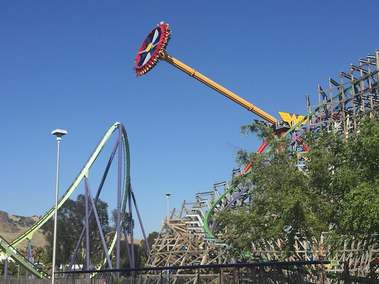
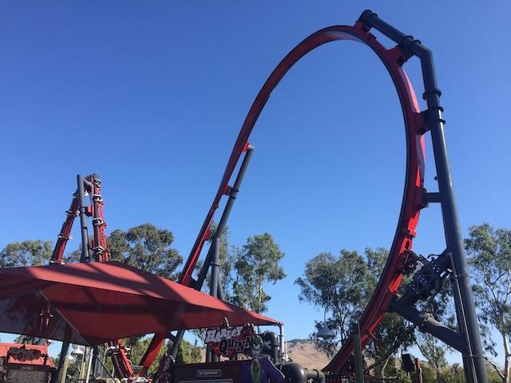
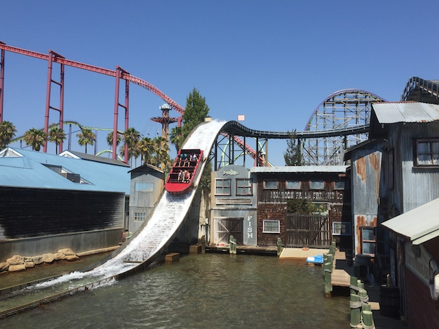
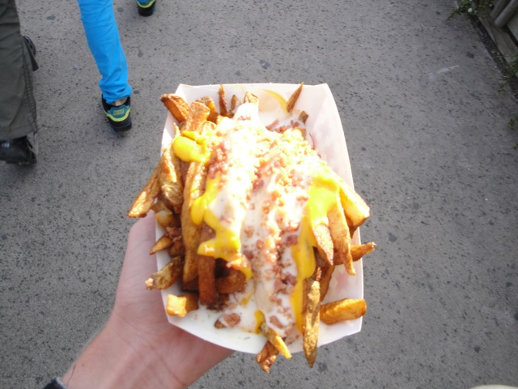

Six Flags Discovory Kingdom is definetly one of the more interesting Six Flags parks. The park has a really nice setting. Everything in the park looks really nice. And aside from this, they have some really good roller coasters. Medusa and V2 both kick a lot of ass, Superman: Ultimate Flight is a fun shuttle loop style coaster, and while Joker is the weakest RMC, it still is an RMC, and as such, it's a lot of fun! =) And not only that, but there is a lot of stuff for you to do at Six Flags Discovory Kingdom. They have a lot of flat rides, a couple water rides, and a lot of animal shows and exhibits for you to check out. But for some reason, people don't tend to talk much about Six Flags Discovory Kingdom. Well I would highly recommend you check out Six Flags Discovory Kingdom if you are in Northern California.
Here are the reviews of all the Flat Rides at Six Flags Discovory Kingdom. Six Flags Discovory Kingdom has a very good flat ride collection (An achievement many parks can't do). Their best flat ride would have to be Wonder Woman, which is a giant Zamperla frisbee. I love these things. I really f*cking love them. They have some decent swining, and just the fact that they go so high really makes me happy. I know I'm annoyed that Six Flags keeps adding clones, well this is something I'm happy is catching on like wildfire. Their next best flat ride would be Tasamanian Devil, which is a traditonal Huss Frisbee. God damn! This park has two freaking frisbees! And you know what? I really like that. Especially when you consider that Tasamanian Devil has a really good program. It swings you pretty high, but the spinning. The spinning is f*cking insane!!! You spin really really fast. It's just plain awesome. Now let's move onto their most unique flat ride. Harley Quinn's Crazy Coaster. No, this is NOT A CREDIT!!! This is a SkyWarp from Skyline. And...the best way to describe the ride is that it's a Super Loop, with laterals. I don't hate the ride in the same way that a lot of other enthusiasts hate the ride. But it does feel a little awkward and clunky. They also have a Starflyer at the park. This should be awesome, but unfortunetly, thanks to the height restriction, they can't make it that big. So that's lame. But at least you get some good views of Medusa and Joker. That's always fun. Another flat ride at Six Flags Discovory Kingdom would be Hammerhead. Hammerhead is a swinging Inverter ship. This is one of the feet dangeling Zamperla Models, which are the best model of swinging inverters as the Zamperla ones, A: Don't have a roof over your head. And B: IT DOESN'T HURT LIKE HELL!!!! And of course, being a Six Flags Park, they have one of those infamous Super Loops. They're not a credit, but they're fun rides. There's also a Top Spin called Voodoo there. I'm pretty sure its SBNO, but if it's open, give it a ride since Top Spins are rare nowadays. Also, they have a scrambler. Fun, but fairly standard. And those are all the flat rides I rode at Six Flags Discovory Kingdom (Well, I rode a Falling Star called Jamba, but they got rid of that). They also have bumper cars, go karts, tea cups, a pirate ship, a Dumbo style ride, some chairswings, and more. So yeah, that's a pretty good flat ride collection.

This frisbee is f*cking insane!!

It may be a little awkward, and constantly broken, but it's not as bad as people are making it out to be.
Water Rides
The water ride collection at Six Flags Discovory Kingdom is not that special. The one water ride I wound up riding was their shoot the chutes ride. Monsoon Falls. It's fun, but there's nothing special about it. Just yet another shoot the chutes ride. Fun if you need to cool off. I also saw that they have a River Rapids ride. From what I heard, it's a pretty good. But I'll have to ride it for myself to know for sure.

Surprisingly, I didn't get that wet.
Dining
Most of the food at Six Flags Discovory Kingdom is nothing special. They have your typical burgers, some chicken fingers, and some other good places that serve typical amusement park crap. They do have a Johnny Rockets if you like that (just be warned about the operations there). But I have found one place in Six Flags Discovory Kingdom that serves some pretty unique food. Over by Medusa, they have this fries place that sells a lot of types of fries. One of those types of fries would be Kingdom Fries. Kingdom fries, are basically fries with cheese, ranch, and bacon. They're just as good as the Potato Patch Fries at Kennywood, if not better. So how come nobody has said a damn thing about these things? And yes, I would recommend these fries to you. And yes, I am not thinking or caring about your health when I recommend these to you.

These are awesome!!
Theming and Other Attractions
Here are the reviews of all the other stuff at Six Flags Discovory Kingdom. Well, for theming, they have a fantastic atmosphere and a lot of nice trees and decorations. The setting on Lake Chabot is pretty good. As for other things to do, they have a ton of animal shows. They used to have a killer whale show, featuring Shouka, Shamu's long lost brother. Well now they're reunited as Shouka has gone to Sea World. But they still have a dolphin show, a tiger show, an elephant show, a shark exhibit, some penguins, and a lot more animal stuff that I don't know about. So even if you don't like any amusement park rides, you will have a great time at Six Flags Discovory Kingdom.
These dolphins are pretty cool.
In Conclusion
Six Flags Discovory Kingdom is a great park to visit. You can get your thrill fix on Joker, Medusa, or Flash. You can also watch some cool dolphin tricks. You can relax in this beautiful park, or you can eat some amazing cholesteral filled Kingdom Fries. Either way, you'll have a great time. I would totally recommend you visit Six Flags Discovory Kingdom if you are ever in Northern California.
Enthusiast FAQs.
*Are there kiddy coaster restrictions? - No and Yes. Cobra don't have any restrictions. So you're good. However, Roadrunner Express requires a kid to ride.
Tips
*Be sure to check out some of the awesome animal shows.
*Flash tends to have a lot of downtime, so try running there after Superman.
*Get to Superman first. Capacity on it is terrible.
*Don't wear bloody clothes with chainsaws on them (You don't want to scare the Dolphins).